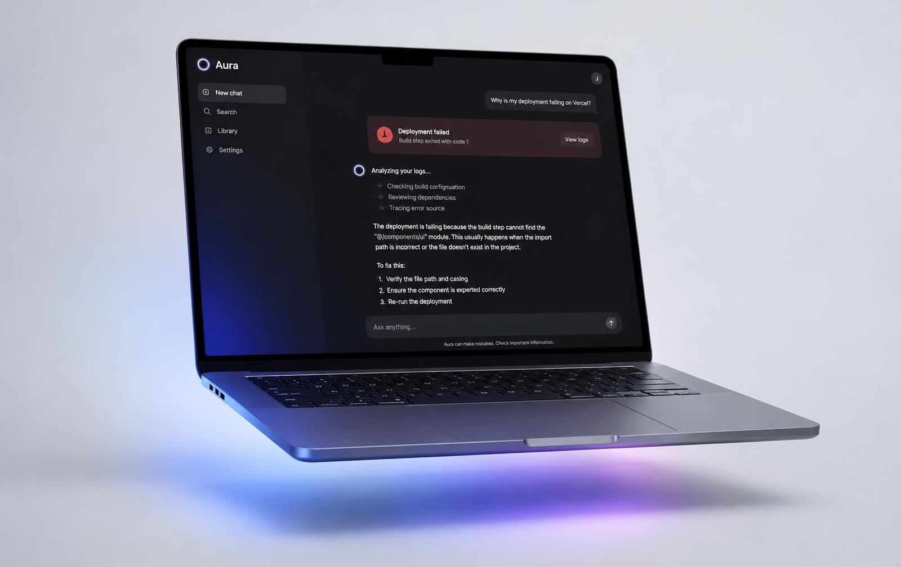
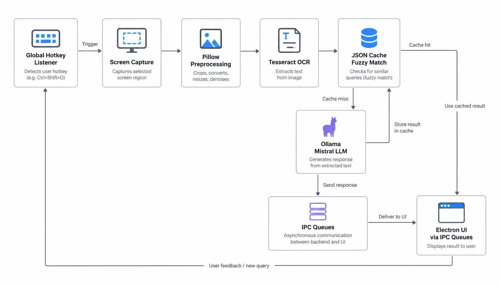

Instantly resolve cryptic computer errors using local AI and OCR, without ever compromising your data privacy.

The Problem
Modern computer operating systems and software frequently generate cryptic, highly technical error messages. For non-technical users, deciphering these errors is incredibly frustrating. The traditional troubleshooting workflow requires users to switch contexts, open a web browser, and manually search for solutions. While cloud-based AI tools like ChatGPT exist, using them requires uploading desktop screenshots, which poses a severe data privacy risk.
Our Solution
The AI Smart Assistant completely eliminates the need for manual searching while guaranteeing 100% data privacy. By utilizing a global keyboard hotkey, users can instantly draw a bounding box over any error on their screen. Our local background orchestrator captures the text via OCR and queries a locally hosted Mistral Large Language Model. The solution is then dynamically streamed in real-time.
No cloud calls, no screenshot uploads.
Engineered for speed, accuracy, and privacy on everyday hardware.
Powered by Mistral via Ollama for zero-latency, offline text streaming.
Tesseract with Pillow (PIL) preprocessing for high-accuracy screen text extraction, even on high-DPI displays.
A custom JSON-based NoSQL store with a 60% threshold fuzzy-matching algorithm for instant recurring error resolution.
Python multiprocessing prevents UI freezing, paired with a modern Electron-based settings interface.

Our architecture is built on a robust Python multiprocessing foundation to ensure zero UI freezing during heavy AI workloads. The system utilizes an isolated background orchestrator to monitor global hotkeys (keyboard library) and capture specific screen regions (mss). The extracted image undergoes contrast enhancement and Lanczos resampling via Pillow (PIL) before being processed by the Tesseract OCR engine. To achieve instantaneous response times, the extracted text is first routed through a fuzzy-matching sequence algorithm (difflib) against our JSON NoSQL cache. If a cache miss occurs, the query is sent to the local Ollama API, which streams the Mistral LLM's response back to the main Electron/Tkinter frontend asynchronously via Inter-Process Communication (IPC) Queues.
Department of Computer Engineering, University of Peradeniya
Clone the repository, run Ollama locally, and press your hotkey — the rest stays on your machine.